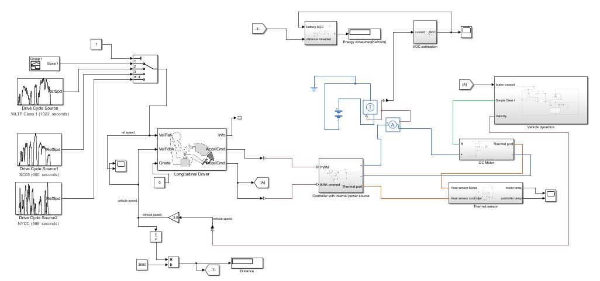
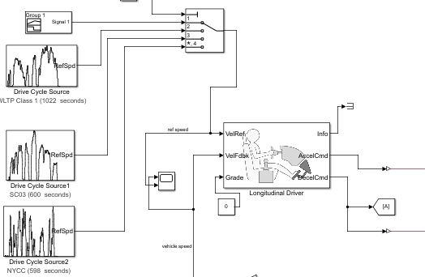
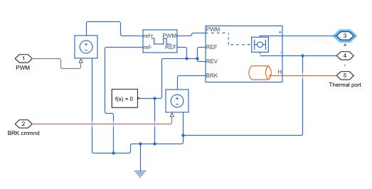
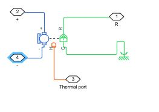
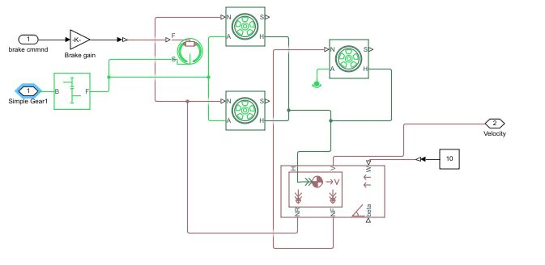
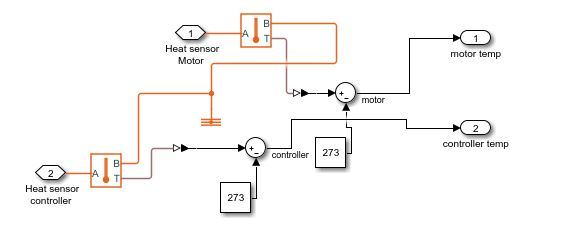
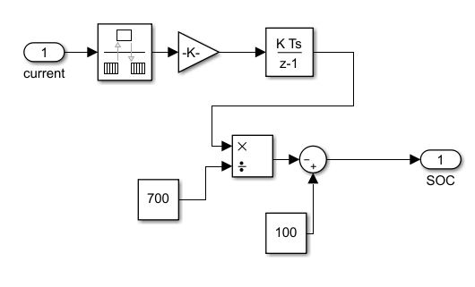
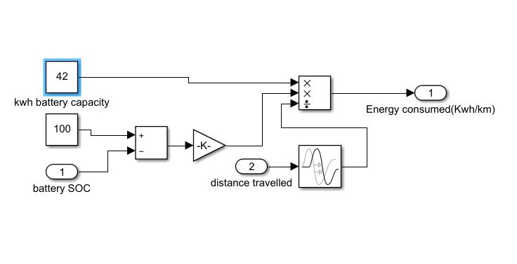
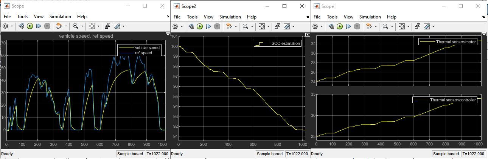

Electric rikshaw power train development
The Aim of the project is to develop and simulate a electric drive train for small 3-wheel passanger vehicle. The control of DC motor and performence evluation of the drive with differemt drive cycles is also evaluated. To control the speed of the motor PWM technique is used. Parameters like energy consumption in Kwh/km, Battery consumption, total distance travelled and heat generation by the motor and controller is also observed.
Drive cycle & Longitudinal Driver
The drive cycle source is used to provide a referency speed value for the vehicle, which vehicle should follow. The drive cycle input goes to the Longitudinal driver with the actual speed of the vehicle, based on the error between the actual and reference speed this block generates the acceleration and brake vlaues in perecentage which is used to generate the relative PWM to control the DC motor.
PWM generator & DC motor
 The perecentage values from Acc. command and Brake command are converted into an equal value of voltage which then goes to the Controlled PWM voltage block. Controlled PWM voltage block generates an output voltage based on the duty cycle input, this output voltage goes to the H-bridge which produces an output voltage to power the motor if the input voltage value is greater then the threshold value. The on/off voltage ouput from the H-bridge directly controls the speed of the motor (figure on the right).
Vehicle dynamics
The output of the motor torque goes to the the wheels through a simple gear block. In between the simple gear and wheels a brake block is attached to simulate the braking effect. The wheel blocks implements the wheel dynamics and there output is connected to the vehicle body to simulate vehicle body dynamics. The output velocity from the vehicle body is the actual vehicle speed which has to be controlled and matched with the reference speed.
Thermal Sensor
In addition to just controlling the speed of the vehicle, how much heat is generated from the H-bridge and motor is also observed. The heat port from both the blocks are connected to temepratue sensor block which outputs the temperature increment as the vehicle drives.
Battery SOC estimation & Energy consumed
 In oder to reduce the simulation time a simple battery is added as an outer loop to just calculate the battery SOC while the main source of power remains the H-bridge internal power source. Battery SOC is estimated using a Coulomb Counting Method. The Coulomb counting method measures the discharging current of a battery and integrates the discharging current over time in order to estimate SOC. To calculate the energy consumed the perecentage of battery consumed is multiplied by the energy of the battery when fully charged and divided by the distance travelled.
Results
From the first graph it can be seen that the vehicle actual speed is trying to follow the reference but it is not able to do that very accurately this is becuase of the fact that all the drive cycles predefiened in the MATLAB are for high powered drive trains but this being an E-rikshaw has a lower powered drive train so it does not have the acceleration capabilities to follow this drive cycle. 2nd graph shows the batters SOC decreasing with time from 100% to almost 91%. The last grapgh shows the temperature increament of the H-bridge controller and the DC motor.